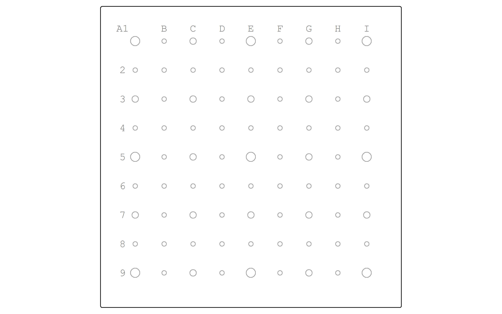
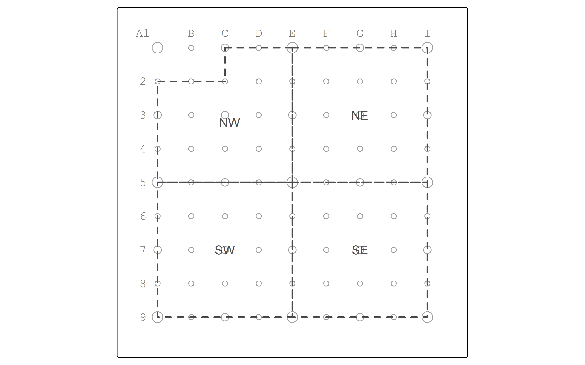

Analysis
2025-02-13
Chapter 1 Introduction
1.1 Abstract
This project is a resource for learning geographic analysis using primarily vector data with the sf for R. To do so, we use a simplified teaching data set inspired by the city of Central Falls, Rhode Island.
1.2 Study Metadata
Key words: Central Falls, sf, vector analysis, teaching demonstrationSubject: Social and Behavioral Sciences: Geography: Geographic Information SciencesDate created: 2025-02-12Date modified: 2025-02-12Spatial Coverage: Central Falls, Rhode Island, OSM:191213Spatial Resolution: 250 metersSpatial Reference System: EPSG:6567 NAD83(2011) / Rhode IslandTemporal Coverage: N/ATemporal Resolution: N/A
1.3 Hello, Central Falls world
Let’s read a reference point grid from the geopackage cf_given in the layer pointgrid.
As we read the data in, we’ll recalculate x- and y- offsets for label placement in tmap.
pointgrid <- st_read(here("data", "raw", "public", "cf_given.gpkg"),
layer="pointgrid") |>
mutate(xOff = xOff / 4,
yOff = yOff / -4)## Reading layer `pointgrid' from data source
## `C:\git\opengisci\Learn-Simple-Features\data\raw\public\cf_given.gpkg'
## using driver `GPKG'
## Simple feature collection with 81 features and 8 fields
## Geometry type: POINT
## Dimension: XY
## Bounding box: xmin: 107710.4 ymin: 88292.71 xmax: 109710.4 ymax: 90292.71
## Projected CRS: NAD83(2011) / Rhode IslandLet’s display the grid. We add a buffer to the pointgrid so that we have sufficient space surrounding the grid in which to place the labels.
pointgrid_map <-
tm_shape(pointgrid,
bbox = st_buffer(pointgrid, 250)) +
tm_symbols(border.alpha = 0.5,
alpha = 0) +
tm_text("label",
ymod="yOff",
xmod="xOff")
pointgrid_map
Let’s read a layer of Central Falls zones, the local geographic unit of enumeration and neighborhood governance.
## Reading layer `zones' from data source
## `C:\git\opengisci\Learn-Simple-Features\data\raw\public\cf_digitized.gpkg'
## using driver `GPKG'
## Simple feature collection with 4 features and 4 fields
## Geometry type: MULTIPOLYGON
## Dimension: XY
## Bounding box: xmin: 107710.4 ymin: 88292.71 xmax: 109710.4 ymax: 90292.71
## Projected CRS: NAD83(2011) / Rhode IslandLet’s inspect the attribute table.
## zone pop minority poverty
## 1 NW 5300 4300 2000
## 2 NE 4800 3800 1350
## 3 SE 4400 3200 1400
## 4 SW 4600 3600 1300Notice how the id column has been converted into row labels.
There are four other columns:
- zone is character string with the zone name based on compass direction.
- pop is an integer count of the total population
- minority is an integer count of the population reporting as any minority identity on the census
- poverty is an integer count of the population with household income below the poverty level
Let’s map the zones.
pointgrid_map +
tm_shape(zones) +
tm_polygons(border.col = "grey",
lwd = 2,
lty = "dashed",
border.alpha = 0.8,
alpha = 0) +
tm_text("zone")